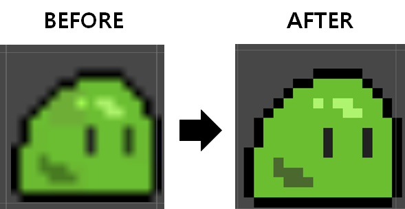
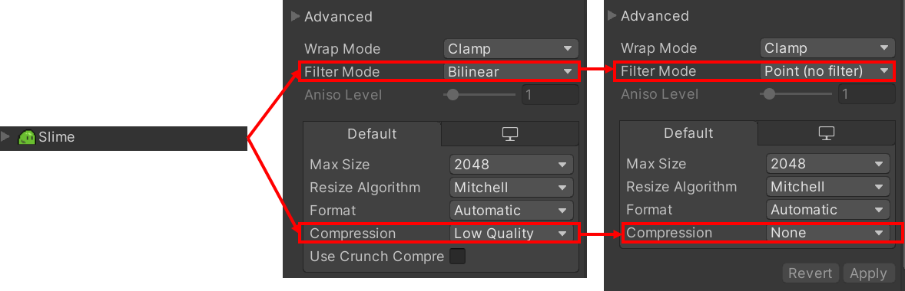

*개인적인 유니티 공부 내용을 기록하는 용도로 작성된 글 이기에, 잘못된 내용이 있을 수 있습니다.
도트 게임을 제작할 때 스프라이트를 씬에 배치하면 스프라이트가 뭉게지듯이 선명하지 않은 형태로 보여지게 되는데, 이러한 현상을 해결하는 방법에 대해서 작성 하도록 하겠습니다.

우선, Assets 폴더에서 변경할 스프라이트를 클릭한 뒤 Advanced로 이동합니다. 다음으로 Filter Mode 와 Compression 의 속성이 각각 Bilinear , Low Quality 로 설정되어 있을 것 입니다. 이는 그래픽을 압축시켜 주는 역할을 하는데 도트 게임에서는 이 옵션들은 Point (no filter) , None 으로 바꿔 주면 됩니다.

전부 변경하시고 Apply를 누르시면 도트가 깨지지 않고 출력됩니다.